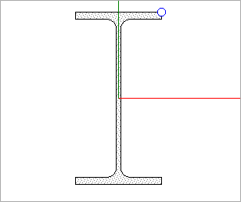

The example in Figure E11 declares two parametric beam types, one with an I-Shape profile and the other with a T-Shape profile. Each type has nine occurrences, using various cardinal points to align the profiles.
Figure E11 — Beam occurrences

The beam 'A-9' in Figure E12 is an occurrence of the 'IPE220' type having an I-Shape profile, placed along an axis using the upper-right cardinal point.
The cardinal point of the beam 'A-9' is set to the upper-right, indicating that the 'Body' representation should be generated with the upper-right of the profile aligned along the curve of the 'Axis representation.
Figure E12 — Beam profile and cardinal point usage


 Link to this page
Link to this page